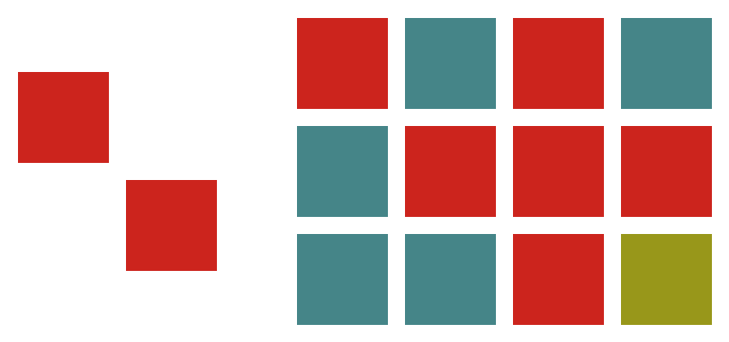

ICPC World Finals 2021 · Problem G
The International Center for the Preservation of Ceramics (ICPC) is searching for motifs in some ancient mosaics. According to the ICPC’s definition, a mosaic is a rectangular grid where each grid square contains a colored tile. A motif is similar to a mosaic but some of the grid squares can be empty. Figure G.1 shows an example motif and mosaic.
The rows of an rq × cq mosaic are numbered 1 to rq from top to bottom, and the columns are numbered 1 to cq from left to right.
A contiguous rectangular subgrid of the mosaic matches the motif if every tile of the motif matches the color of the corresponding tile of the subgrid. Formally, an rp × cp motif appears in an rq × cq mosaic at position (r, c) if for all 1 ≤ i ≤ rp, 1 ≤ j ≤ cp, the tile (r + i − 1, c + j − 1) exists in the mosaic and either the square (i, j) in the motif is empty or the tile at (i, j) in the motif has the same color as the tile at (r + i − 1, c + j − 1) in the mosaic.
Given the full motif and mosaic, find all occurrences of the motif in the mosaic.

The first line of input contains two integers rp and cp, where rp and cp (1 ≤ rp, cp ≤ 1 000) are the number of rows and columns in the motif. Then rp lines follow, each with cp integers in the range [0, 100], denoting the color of the motif at that position. A value of 0 denotes an empty square.
The next line of input contains two integers rq and cq where rq and cq (1 ≤ rq, cq ≤ 1 000) are the number of rows and columns in the mosaic. Then rq lines follow, each with cq integers in the range [1, 100], denoting the color of the mosaic at that position.
On the first line, output k, the total number of matches. Then output k lines, each of the form r c where r is the row and c is the column of the top left tile of the match. Sort matches by increasing r, breaking ties by increasing c.
2 2 1 0 0 1 3 4 1 2 1 2 2 1 1 1 2 2 1 3
3 1 1 1 3 2 2